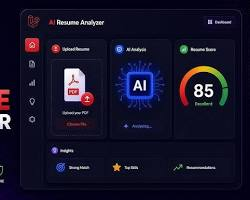

I’m a Computer Science student and software developer who builds scalable web applications, data-driven systems, and clean user experiences using modern technologies and best engineering practices.
I am a Computer Science student at York University with hands-on experience in software development, database systems, data migration, and analytics. I have worked on enterprise applications within the Ontario Public Service and contributed to building AI-based platforms and data dashboards. I enjoy working in Agile environments, collaborating with cross-functional teams, and applying strong problem-solving skills to develop secure, efficient, and data-driven software solutions while continuously strengthening my technical and professional skills through academic coursework and real-world project experience initiatives.
View MoreAs a Software Developer with the Ontario Public Service, I build automation processes and automated reporting solutions using a range of programming and scripting languages to support management decision-making. I participate in day-to-day incident management to support Data Centre Operations, and coordinate project plans, schedules, and technical activities across multiple concurrent projects — providing technical guidance and progress updates to management along the way. I also design reporting dashboards in Power BI and streamline workflows using Power Automate and Flow, turning manual processes into efficient, repeatable systems.
Troubleshot hardware, software, and network issues to ensure stable daily IT operations across academic systems, and supported the installation, configuration, and maintenance of enterprise applications. Analyzed operational data to generate reports and visual insights for IT decision-making, and identified workflow inefficiencies to drive process improvement initiatives.
Supported User Acceptance Testing (UAT) by coordinating with business stakeholders and translating technical system behavior into functional validation criteria. Performed database gap analysis to identify structural inefficiencies, designed and managed end-to-end ETL pipelines from legacy systems into modernized environments, and developed SQL-based validation scripts to test stored procedures, triggers, and data integrity across enterprise databases.
Worked on enterprise compliance platforms, managing secure data migration using PL/SQL and Oracle GoldenGate while collaborating across Agile teams and supporting system testing and operations.
Built a WordPress-based AI voice assistant platform integrating Retell AI and designed analytics dashboards to visualize call performance, sentiment, and success metrics.
Contributed to student-led software projects, collaborating on web development tasks, implementing features, and applying programming fundamentals in a team-based, project-driven environment.
HTML5
CSS3
Tailwind CSS
Javascript
Java
Python
SQL
PL/SQL
MongoDB
C
Data Structure & Algorithms
Linux/Unix
React
Node.js
PowerBI
Github
Focused on software development, database systems, data structures, software design, and core computer science concepts through hands-on coursework and projects.
Built a strong academic foundation with emphasis on mathematics, analytical thinking, problem-solving skills, and disciplined learning habits.

Created a full-stack web application that analyzes resumes using AI to extract skills, score profiles, and generate improvement recommendations, with RESTful APIs to manage users, resume data, and analysis results.
React, Spring Boot, MySQL, Google Gemini API, REST APIs
Built a secure, full-stack workout tracking system with JWT-based authentication and role-based API access, a normalized relational schema for workouts and progress tracking, and Docker Compose containerization for consistent local deployment.
Spring Boot, MySQL, JWT, REST APIs, Docker
Built a full-stack AI background removal web app with secure authentication, REST APIs, and responsive UI, enabling fast image processing and seamless user experience.
HTML5, CSS, Javascript, React, Node.js, Express.js, MongoDB, REST APIs, Clerk
Developed an interactive dice game with dynamic state management and responsive design, focusing on clean UI, smooth gameplay, and component-based architecture.
HTML5, Tailwind.css, Javascript, React
Full-stack application development using Java, Python, and JavaScript, with hands-on experience in REST APIs, SQL/PL-SQL, and ETL pipelines to build secure, scalable, and data-driven systems.
Responsive, component-based web applications built with React, Node.js, and modern frontend/backend tooling, from database design through to deployment with Docker.
Experienced working in Agile SDLC environments, collaborating with cross-functional and business stakeholders, managing tickets through JIRA, and supporting UAT and accessibility testing across system modules.